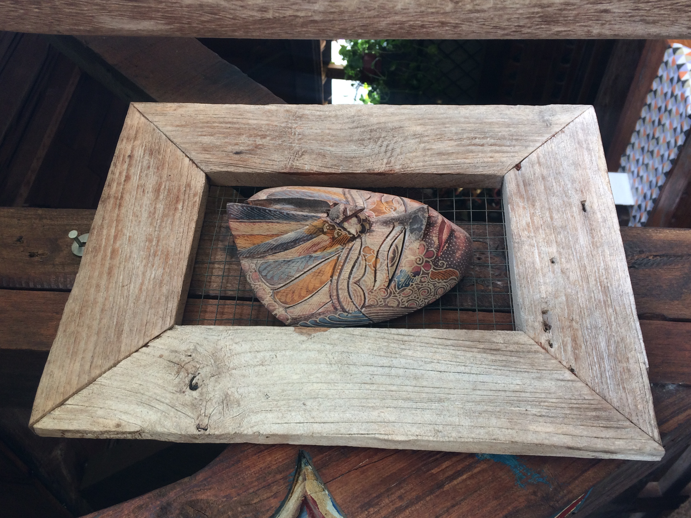
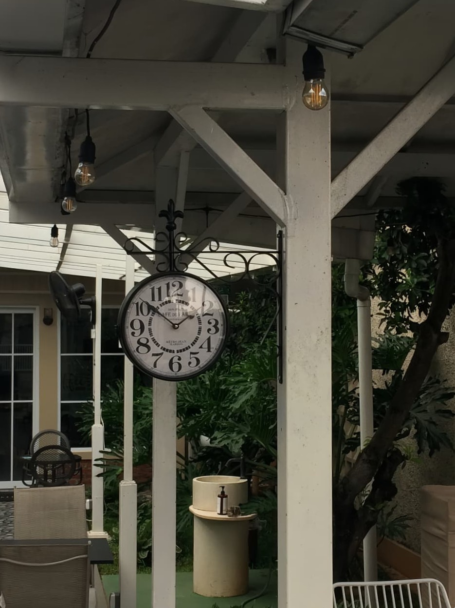

Konten Saya

Topeng Kayu Nusantara
Foto ini menampilkan sebuah topeng kayu berukir yang digantung pada pilar kayu bertekstur kasar dan lapuk. Topeng tersebut memiliki detail pahatan wajah tradisional dengan sentuhan warna cat yang mulai memudar, seperti biru, cokelat, dan kekuningan, memberikan kesan artistik dan antik. Kontras antara lengkungan halus pada ukiran wajah topeng dan garis-garis kasar pada serat kayu di belakangnya menonjolkan keindahan seni kriya lokal dan nilai budaya sejarah yang kuat.

Museum Fatahillah
Foto ini mengabadikan keindahan ikonik dari Museum Fatahillah (Museum Sejarah Jakarta) yang berdiri megah di kawasan bersejarah Kota Tua, Jakarta. Dalam foto ini, bangunan peninggalan kolonial abad ke-18 tersebut tampil anggun dengan arsitektur klasik bergaya Eropa, didominasi oleh dinding putih bersih, deretan jendela besar yang simetris, serta atap genteng merah bata yang memikat. Keberadaan menara kecil (cupola) di puncaknya menjadi ciri khas yang mempertegas kemegahan masa lalu.

Jam Gantung Klasik
Ini adalah sebuah jam gantung stasiun bergaya vintage dengan bingkai logam hitam dekoratif dan angka romawi yang klasik. Jam ini terpasang menggantung pada struktur balok kayu berwarna putih di area semi-terbuka. Latar belakang foto memperlihatkan perpaduan antara arsitektur bangunan bercat putih dengan pintu/jendela kaca kotak-kotak dan rimbunnya dedaunan hijau dari tanaman di sekitarnya. Komposisi ini menciptakan suasana yang tenang, teduh, dan sarat akan nuansa nostalgia.